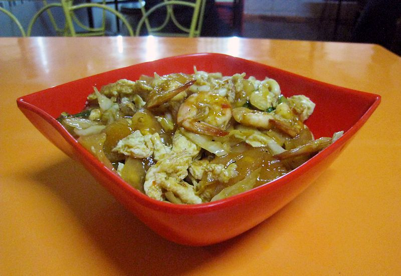
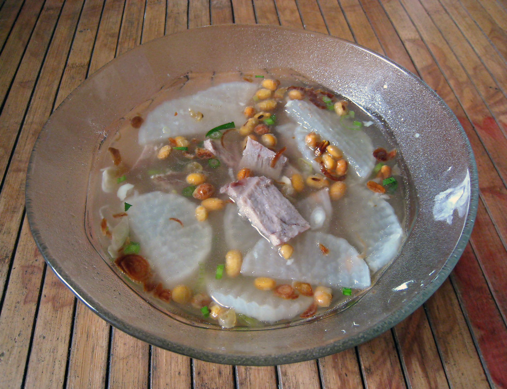
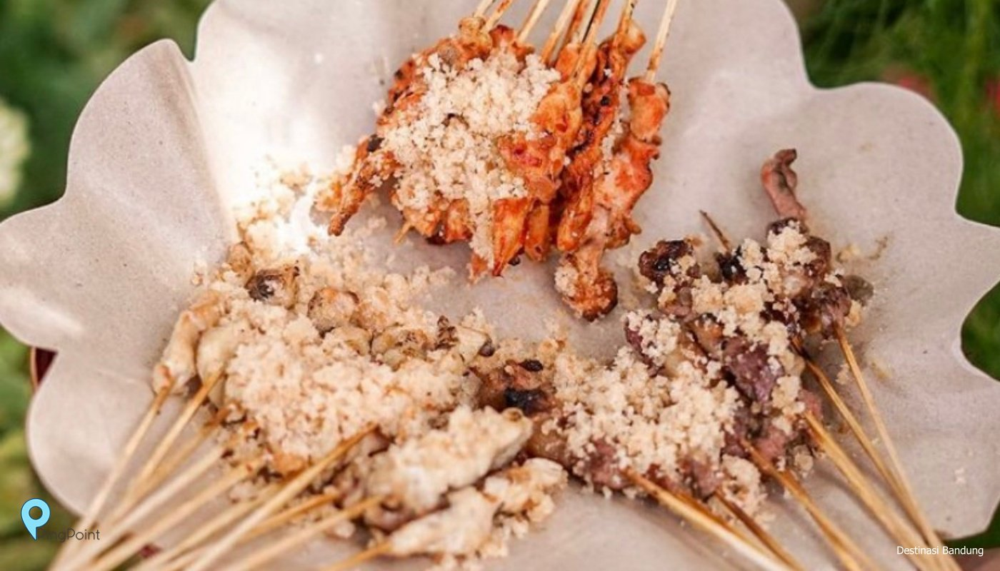
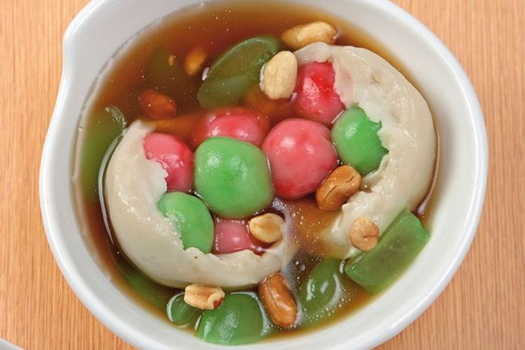

MAKANAN TRADISIONAL
Seblak Kuah

Seblak adalah makanan Indonesia yang dikenal berasal dari Bandung, Jawa Barat dengan cita rasa gurih dan pedas.
Terbuat dari kerupuk basah yang dimasak dengan sayuran dan sumber protein seperti telur, ayam, boga bahari, atau
olahan daging sapi, dan dimasak dengan kencur.
Seblak kini menjadi makanan jajanan jalanan yang digemari berbagai kalangan masyarakat, terutama di Jawa Tengah
dan Jawa Barat.
Seiring berkembangnya tren jajanan tradisional dan kaki lima, seblak tidak hanya disajikan dengan toping biasa
di gerobak.
Seblak berkembang menjadi makanan yang modern dan berhasil menarik perhatian.
Makanan yang bertekstur kenyal ini memiliki rasa yang pedas dan menyegarkan, serta memiliki beberapa variasi,
baik rasa maupun bahan tambahan juga kemasan penjualan.
Soto Bandung

Soto Bandung adalah soto khas Bandung, Jawa Barat.
Sepintas, soto yang berbahan dasar daging sapi (biasanya bagian tetelan atau has dalam) ini hampir sama dengan
jenis soto yang lain, tetapi yang membuatnya berbeda adalah adanya tambahan lobak, tomat, dan kedelai goreng di
dalamnya.
Soto tanpa santan ini biasa disantap dengan nasi dan kerupuk.
Roti Gempol
Jika sedang tak ingin makan berat, Roti Gempol bisa jadi jujugan tepat untuk ngemil. Tempat yang jadikan roti
bakar sebagai menu utama ini sudah sangat terkenal di seantero Bandung.
Hadir sejak 1958, kedai Roti Gempol miliki cita rasa khas yang terus konsisten selama beberapa dekade. Tak heran
pelanggannya kini sudah ratusan. Saking banyaknya, kalian harus rela antre panjang jika ingin mencicipi
kenikmatannya, terlebih di jam-jam sibuk.
Sate Asin Pedas

Sate Asin Pedas sempat menjadi makanan viral dan paling dicari di Kota Bandung. Memang pas jika dijuluki kota
kuliner, Kota Bandung memang selalu hadir dengan inovasi-inovasi hidangan yang lezat dan menarik. Jika Jakarta
punya Sate Taichan, maka Bandung memiliki Sate Asin Pedas. Sate Asin Pedas adalah umumnya sate ayam yang dibalut
dengan bumbu cabai dan bumbu soto lengkap dengan taburan koya.
Ronde

Ronde adalah makanan tradisional China dengan nama asli Tāngyuán (Hanzi=湯圓;penyederhanaan=汤圆; hanyu
pinyin=tāngyuán).
Nama tangyuan merupakan metafora dari reuni keluarga (Hanzi=團圓;penyederhanaan=团圆) yang dibaca tuányuán
(menyerupai tangyuan).
Ronde terbuat dari tepung ketan yang dicampur sedikit air dan dibentuk menjadi bola, direbus, dan disajikan
dengan kuah manis.
Ukurannya bisa kecil atau besar, diberi isi maupun tidak.
Masyarakat China biasa mengonsumsi tangyuan saat festival Yuanxiao atau Festival Lampion atau Festival Dongzhi
(Hanzi=冬至;penyederhanaan=冬至; Korea=동지;Vietnam=Đông chí; Indonesia=Hari Wedang Ronde)
atau pada setiap kesempatan diadakan perkumpulan keluarga, misalnya saat pesta pernikahan.